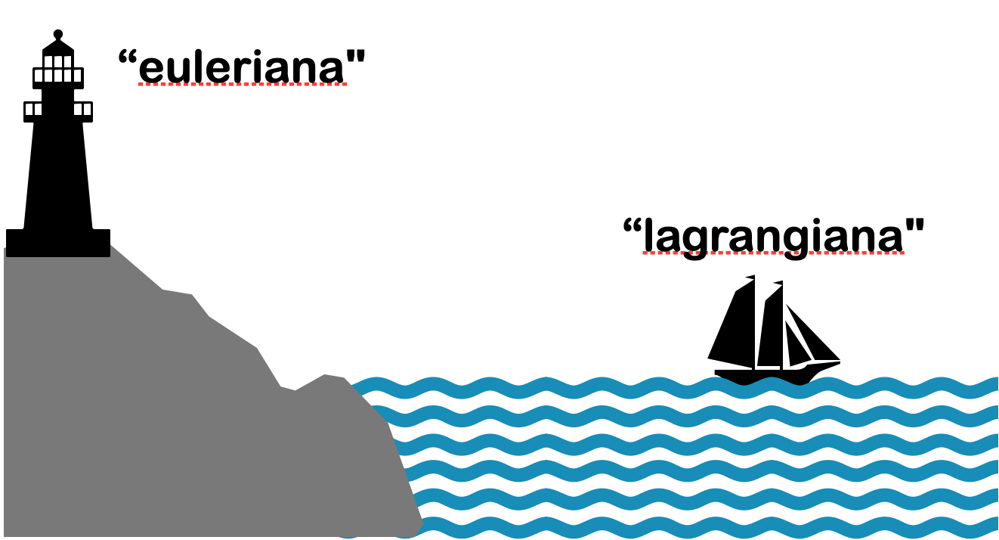
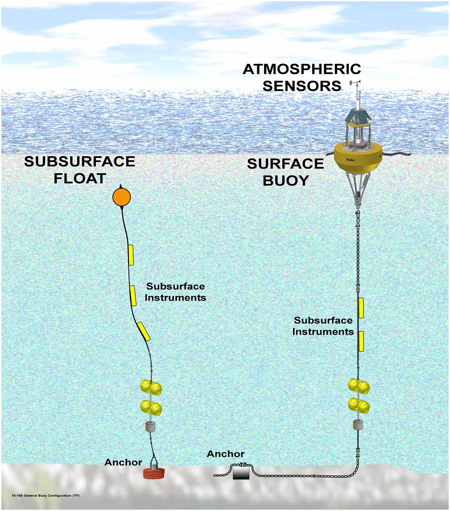

class: center, middle <br/><br/> .title[Oceanografía Dinámica I] .subtitle[Clase 2 Introducción (cont.)] <br/><br/> .author[Cuatrimestre 2025-I] .institution[DOF-CICESE] <br/> .date[10 de enero de 2025] <br/><br/> <img style="width:100%" src="./figures/green_waves.png"> <!-- .note[Created with [{Liminal}](https://github.com/jonathanlilly/liminal) using [{Remark.js}](http://remarkjs.com/) + [{Markdown}](https://github.com/adam-p/markdown-here/wiki/Markdown-Cheatsheet) + [{KaTeX}](https://katex.org)] --> --- name: toc class: left <img style="width:50%" src="./figures/ink.jpg"> #Contenido 1. [Mini repaso de matemáticas](#mates) 1. [Importancia de la estratificación](#estratificacion) 1. [Importancia de la rotación](#rotacion) 1. [Escalas atmosféricas y océanicas](#escalas) 1. [Repaso tasas de cambio](#tasas) <!-- Comment out the next slide if you don't want the Table of Contents link --> --- layout: true .toc[[✧](#toc)] --- class: center --- name: mates class: left Ejercicio diagnóstico, PDF repaso de mates y pizarrón. --- class: center --- class: left De la clase pasada: # Características de los fluidos geofísicos (FG) </br></br> * Se encuentran en un sistema de referencia en **rotación**; </br></br> * por lo regular están **estratificados**; </br></br> * En la naturaleza ocurren a "gran escala". --- name: estratificacion class: left ##Ejemplo: Efectos de la estratificación Demo: Frecuencia de Brunt-Väisälä <iframe width="560" height="315" src="https://www.youtube.com/embed/_DqOyvWwqWI?start=116" title="YouTube video player" frameborder="0" allow="accelerometer; autoplay; clipboard-write; encrypted-media; gyroscope; picture-in-picture" allowfullscreen></iframe> .caption[Video de Fabrizio Croccolo] --- ## La frecuencia de flotación (?) o de Brunt-Väisäla Vamos al pizarrón... --- ## Importancia de la estratificación Formación de capas bajo gravedad --> Configuración que minimiza energía potencial del sistema Efecto dinámico de la estratificación: Transformación de energía potencial a cinética y viceversa. Cambio en energía potencial por unidad de volumen de parcela de fluido que elevo una altura H: $\Delta \rho g H$. Energía cinética disponible por unidad de volumen: $\frac{1}{2}\rho_0U^2$ Definimos el cociente de las energías: $$\sigma=\frac{1}{2}\frac{\rho_0U^2}{\Delta\rho g H}.$$ --- ## Importancia de la estratificación Definimos el cociente de las energías: $$\sigma=\frac{1}{2}\frac{\rho_0U^2}{\Delta\rho g H}.$$ Si $\sigma\approx1$: Un incremento típico en energía potencial que modifique el flujo consume un pedazo considerable de la energía cinetica disponible --> La estratificación es importante. -- Si $\sigma<<1$: no hay suficiente energía cinética disponible para perturbar la estratificación y ésta limita el flujo --> la estratificación no se puede ignorar. -- Si $\sigma>>1$: modificaciones de energía potencial ocurren a muy bajo costo de energía cinética (es muy fácil mover una parcela de lugar) y la estratificación casi no afecta al flujo --> se puede ignorar. --- name: rotacion class: left ## Ejemplo: Efectos de la rotación <iframe width="560" height="315" src="https://www.youtube.com/embed/KiBrKzykwO8?start=116" title="YouTube video player" frameborder="0" allow="accelerometer; autoplay; clipboard-write; encrypted-media; gyroscope; picture-in-picture" allowfullscreen></iframe> .caption[Taylor Columns: DIYnamics Kits Experiments] --- class: left ## Columnas de Taylor Si el flujo no estuviera en rotación, esperaríamos que la tinta pasara tanto sobre el obstáculo como alrededor del obstáculo. La rotación genera estructuras verticales en el flujo o "columnas" que siguen líneas de misma profundidad (isóbatas), por lo que la columna de fluido con tinta es forzada a rodear el obstáculo para no cambiar de profundidad (Veremos más al respecto en el curso). --- class: left ## La importancia de la rotación Vamos al pizarrón... --- class: left ## Ejemplo Tomemos 3 minutos para resolver el siguiente ejemplo individualmente: **Un viento que sopla a 10 ms$^{-1}$ en un sistema de baja presión de 1000 km de ancho.** -- $$ \epsilon=\frac{2\pi U}{\Omega L}=\frac{2\pi \; 10^1 \; \textrm{ms}^{-1}}{10^{-4}\; \textrm{s}^{-1} \; 10^6 \; \textrm{m}} \approx 1, $$ por lo tanto, la rotación debe ser considerada en la dinámica del problema. --- name: escalas class: left ## ¿Qué pasa cuando la rotación y la estratificación son importantes? Esto ocurre cuando $\epsilon \sim 1$ y $\sigma \sim 1$ simultáneamente y obtenemos las siguientes relaciones entre escalas: $$L \sim \frac{U}{\Omega} \; \; \mathrm{ y } \; \; U\sim\sqrt{\frac{\Delta\rho}{\rho_0}gH}.$$ Combinándolas obtenemos una escala de longitud fundamental: $$L\sim\frac{1}{\Omega}\sqrt{\frac{\Delta\rho}{\rho_0}gH}.$$ Para un fluido dado de densidad promedio $\rho_0$ y variaciones de densidad $\Delta\rho$, que ocupa una altura $H$ en un planeta que rota a velocidad $\Omega$ y tiene gravedad $g$, $L$ es la escala de longitud preferencial a la que ocurrirá el movimiento. --- class:left $$L\sim\frac{1}{\Omega}\sqrt{\frac{\Delta\rho}{\rho_0}gH}.$$ En la Tierra ($\Omega=7.29\times10^{-5}$ s$^{-1}$, $g=9.81$ ms$^{-2}$), con condiciones típicas para la atmósfera ($\rho_0=1.2$ kg/m$^3$, $\Delta\rho=0.03$ kg/m$^{3}$, $H=5000$ m) y el océano ($\rho_0=1028$ kg/m$^3$, $\Delta\rho=2$ kg/m$^{3}$, $H=1000$ m) nos dan las siguientes escalas naturales de longutud y velocidad: $$L\_{atmósfera}\sim 500~\mathrm{km, } \; U\_{atmósfera}\sim 30~\mathrm{ms}^{-1}$$ $$L\_{océano}\sim 60~\mathrm{km, } \; U\_{océano}\sim 4~\mathrm{ms}^{-1}.$$ Aunque sean estimaciones *grosso modo*, podemos reconocer la longitud y velocidad típicas de patrones meteorológicos en la atmósfera baja y el ancho y rapidez típicas de las corrientes superficiles más prominentes. --- class: left ## Algunas diferencias entre atmósfera y océano * Océano evoluciona más lentamente, a menor escala y menores velocidades que la atmósfera. * Continentes e islas (fronteras laterales) generan fenómenos oceánicos que no tienen contraparte atmosférica, mientras que la atmósfera puede depender fuertemente de la humedad, lo cuál no tiene contraparte oceánica. * Mecanismos dinámicos muy distintos: Atmósfera fuertemente dominada por termodinámica (radiación solar, principalmente); océano forzado por mareas, vientos, gradientes de calor, evaporación y precipitación. * Meteorología: los vientos vienen de x dirección; Oceanografía: las corrientes van hacia x dirección. --- name: tasas class: left ## Cinemática: ¿Cómo vamos a describir al fluido? Describir el movimiento de un objeto pequeño, como una piedra, es relativamente sencillo. Podemos seguir la trayectoria del centro de masa como una función $\vec{x}=\vec{x}(t)$ y relacionar las fuerzas que actúan sobre la piedra con la velocidad y aceleración a partir de nuestro conocimiento de $\vec{x}(t)$. La descripción de un fluido no es tan simple. El fluido está en todos lados. No nos interesa la trayectoria del centro de masas sino el movimiento del continuo, constituido por una inifindad de elementos de fluido. En general hay dos métodos útiles: **Descripción euleriana** **Descripción lagrangiana** --- class: center ## Analogía entre descripciones  --- class: left ## Descripción euleriana .left-column[Fluido en espacio 3D y tiempo. Podemos describir una propiedad $P$ como función del vector de posición $\vec{x} = (x, y, z)$ y el tiempo, $P=P(\vec{x},t)$. Descripción de P en cada punto y para cada tiempo sin especificar qué elemento de fluido ocupa qué posición a un tiempo dado$^1$.footnote[$1.$ E.g. Ve a [nvs.nanoos.org](http://nvs.nanoos.org/) para ver ejemplos de series de tiempo de "plataformas fijas".]. * Anemómetro fijo * Corrientímetro] .right-column[ ] --- class: left ## Descripción lagrangiana .left-column[ "Monitorea" elementos de fluido individuales y especifica las propiedades con respecto a cada elemento. Descripción del flujo siguiendo a cada partícula de fluido. Ejemplos de mediciones lagrangianas: * Drifters o flotadores en el océano$^2$.footnote[$2.$ Por ejemplo: Derivadores del Lagrangian Drifter Lab del Global Drifter Program de NOAA [en vivo](https://gdp.ucsd.edu/apps/projects/noaa/global-drifter-program.html) y ARGO floats (Imagen de Commonwealth Scientific and Industrial Research Organisation (CSIRO))]] .right-column[ <img style="width:100%" src="./figures/drifter_scripps.jpg"></br> </br>] --- class: left ## Tasas de cambio Imagina que viajas de Cuernavaca al Puerto de Veracruz en bicicleta. En el camino notarás un cambio de temperatura. Esto puede ser debido a que la temperatura cambió en el tiempo (hora del día, fenómeno meteorológico, etc.) o a que atravesamos un gradiente espacial de temperatura (altitud, vegetación, etc.). .center[<img style="width:60%" src="./figures/ciclista_material.png">] Veremos 3 nociones de tasa de cambio: 1. Cambio temporal local (tasa de cambio en un punto fijo), 2. tasa de cambio de un observador en movimiento y 3. tasa de cambio de un elemento de fluido dentro del flujo. --- class: left ## Tasa de cambio local Definimos la tasa de cambio de una propiedad $P$ con respecto al tiempo en un punto fijo $\vec{x}$ como: $$\textrm{Derivada temporal local} = {\frac{\partial P}{\partial t}}\Big|_{\vec{x}}$$ Regularmente omitimos el subíndice $\vec{x}$. Podemos ver esto como el cambio de $P$ conforme una serie de elementos de fluido pasan por el punto $\vec{x}$. --- class: left ## Tasa de cambio de un observador en movimiento Volvamos a la ciclista viajando a Veracruz. Digamos que se mueve a velocidad $\vec{v}=(v_1,v_2,v_3)$ distinta al fluido (aire), de manera que para ella $\vec{v}=d\vec{x}/dt$. El cambio **total** en la propiedad $P$ medido por la ciclista es: $$\frac{dP}{dt}=\frac{\partial P}{\partial t} + \frac{\partial P}{\partial x}\frac{dx}{dt} + \frac{\partial P}{\partial y}\frac{dy}{dt} + \frac{\partial P}{\partial z}\frac{dz}{dt}$$ $$\frac{dP}{dt}=\frac{\partial P}{\partial t}+\vec{v}\cdot\nabla P$$ --- class: left ## Ejemplo: Tasa de cambio de la altura sobre el piso de una niña que baja por una resbaladilla. --- class: left ## Tasa de cambio de un elemento de fluido dentro del flujo El "observador" ahora es el mismo flujo, que se mueve con la misma velocidad que el fluido, $\vec{u}$. La tasa de cambio es simplemente la tasa de cambio de la propiedad $P$ del propio elemento de fluido: $$\frac{DP}{Dt}=\frac{\partial P}{\partial t}+\vec{u}\cdot\nabla P$$. A esta tasa de cambio se le conoce como *derivada material* o *derivada total*. --- class: left ## Ejemplo: Propiedad cuya distribución está dada por $P=P_0\cos{\omega t}\sin{kx}$, donde $\omega=2\pi/T$ es la frecuencia de la onda y $k=2\pi/\lambda_x$ es el número de onda en dirección $x$. Supongamos que el flujo es únicamente en dirección $x$ con magnitud $U$. (pizarrón) --- .center[] --- ## Actividades: Leer (o repasar) los primeros 3 capítulos de "La increíble historia de la malentendida fuerza de Coriolis" de P. Ripa, FCE. ## Referencias: Cushman-Roisin y Beckers - Capítulos 1 y 11. ---